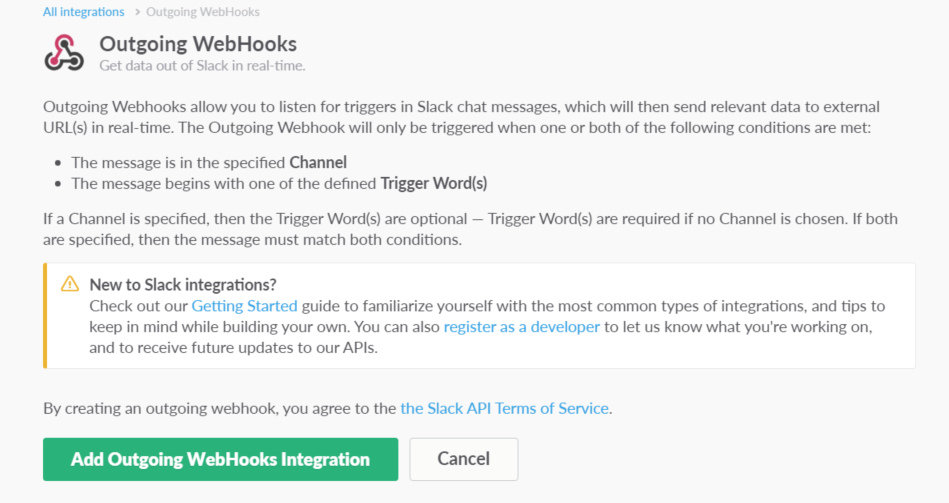

How to use利用方法
- 利用方法一覧
- nagiosとの連携方法
- zabbixとの連携方法
- slackとの連携方法
nagiosとの連携方法
1.架電スクリプトを作成
# vi /usr/lib64/nagios/plugins/oniden.sh
====================
#!/bin/sh
APIKEY="xxxxxxxxxxxxxxxxxxxxxxxxxxxxxxxx"
GETCONT=`curl -sX GET
"https://oniden.jp/api/v1/call_api_key/${APIKEY}"`
RESULT=`echo $GETCONT | jq -r '.result'`
KEY=`echo $GETCONT | jq -r '.call_api_key'`
if [ "$RESULT" != "OK" ] ; then
exit 1
fi
curl -sX POST -H 'Content-Type: application/json' \
-d "{\"call_api_key\":\"${KEY}\"}" \
https://oniden.jp/api/v1/call >/dev/null
====================
# chmod 755 /usr/lib64/nagios/plugins/oniden.sh
```
2.nagiosのコマンドとして登録
1)conf.d配下の設定を読み込むようコメントイン
# vi /etc/nagios/nagios.cfg ==================== - #cfg_dir=/etc/nagios/conf.d + cfg_dir=/etc/nagios/conf.d ====================
2)コンタクト設定の追加
# vi /etc/nagios/conf.d/oniden.cfg
====================
define contact {
contact_name oniden
alias oniden
service_notification_period 24x7
host_notification_period 24x7
service_notification_options w,u,c,r
host_notification_options d,r
service_notification_commands notify-service-for-oniden
host_notification_commands notify-host-for-oniden
}
define command {
command_name notify-service-for-oniden
command_line /usr/lib64/nagios/plugins/oniden.sh
}
define command {
command_name notify-host-for-oniden
command_line /usr/lib64/nagios/plugins/oniden.sh
}
====================
3.contactgroupにonidenを追加して反映
# vi /etc/nagios/objects/contacts.cfg
====================
define contactgroup{
contactgroup_name admins
alias Nagios Administrators
- members nagiosadmin
+ members nagiosadmin,slack
}
====================
ZABBIXとの連携方法
1.架電スクリプトを作成
# vi /usr/lib/zabbix/alertscripts/oniden.sh
====================
#!/bin/sh
APIKEY="xxxxxxxxxxxxxxxxxxxxxxxxxxxxxxxx"
GETCONT=`curl -sX GET "https://oniden.jp/api/v1/call_api_key/${APIKEY}"`
RESULT=`echo $GETCONT | jq -r '.result'`
KEY=`echo $GETCONT | jq -r '.call_api_key'`
if [ "$RESULT" != "OK" ] ; then
exit 1
fi
curl -sX POST -H 'Content-Type: application/json' \
-d "{\"call_api_key\":\"${KEY}\"}" \
https://oniden.jp/api/v1/call >/dev/null
====================
# chmod 755 /usr/lib/zabbix/alertscripts/oniden.sh
```
2.ZABBIXの通知設定として登録

3.ユーザ追加
slackとの連携方法
1.外部からアクセス出来るWEBへプログラム設置(PHPでの例)
{'result'};
$call_api_key = $obj->{'call_api_key’};
if($result == "OK"){
die(1);
}
$result_url = 'https://oniden.jp/api/v1/call';
$json_data = array("call_api_key"=>$call_api_key);
$options = array(
'http' => array(
'method' => 'POST',
'header' => 'Content-type: application/json',
'content' => json_encode( $json_data )
)
);
$context = stream_context_create( $options );
$result = file_get_contents( $result_url, false, $context );
?>
2.slackのIntegrationsから「Outgoing WebHooks」を追加

3.slackのIntegrationsから「Outgoing WebHooks」を追加
のちほどスクリーンショット画像追加
Channel: 監視対象のチャンネル
Trigger Word(s): プログラムをキックする言葉
URL(s): 設置したプログラムのURL
独自プログラムを書く場合
連携説明